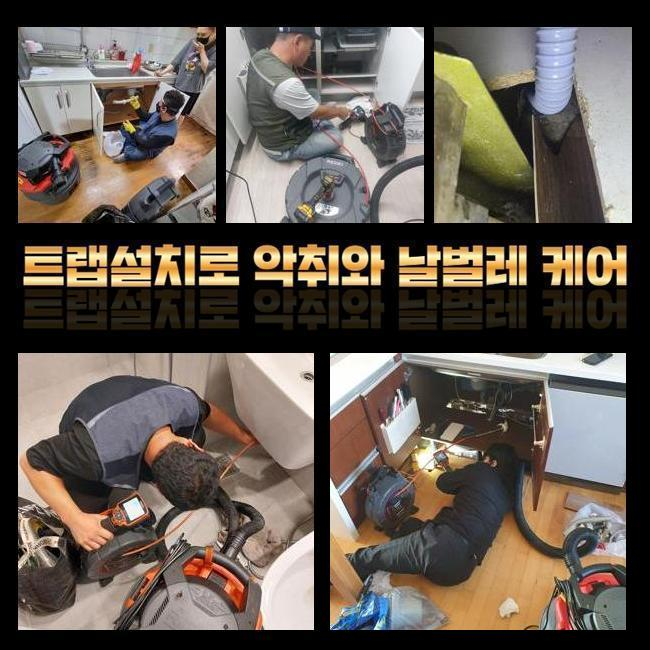
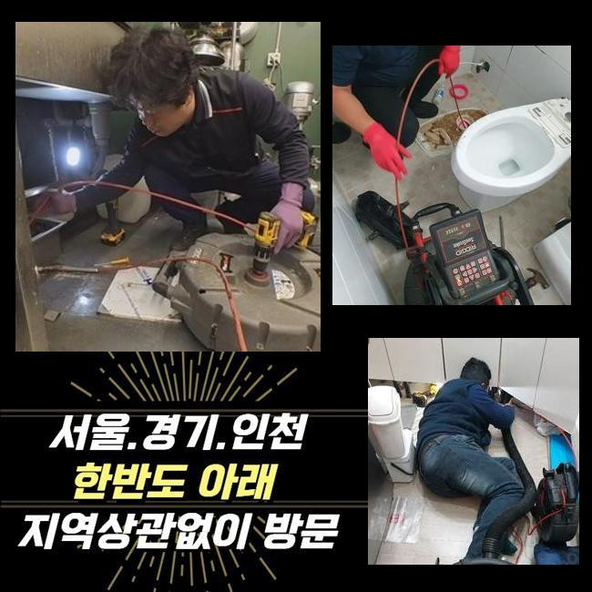
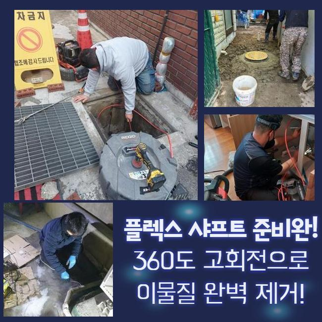
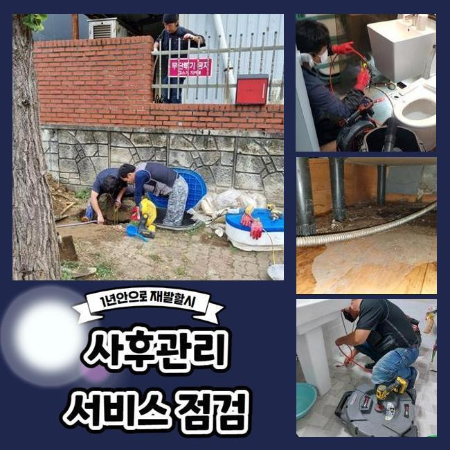
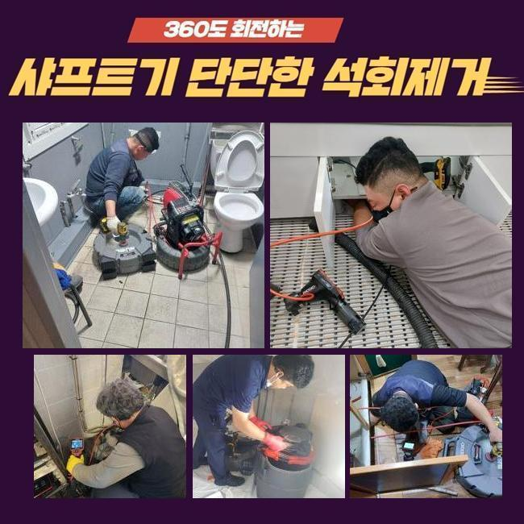

🏠 대야동화장실막힘 거모동 하수구청소장비 해결방법
용인 하수구막힘 전문 시공 후기

📋 작업 개요
- 위치: 용인
- 서비스 유형: 하수구막힘, 배관막힘, 누수수리, 역류해결, 배관청소
- 작업 일시: 2025. 3. 31. 18:25
- 업체명: 하수구수사대 (010-5615-2118)
🔍 문제 상황
대야동화장실막힘 거모동 하수구청소장비 해결방법
어제 저녁에 의뢰인께 다급한 의뢰를 받아서 목적지에 방문했어요
의뢰인께서는 문제 상황으로 전화를 주신 것이고 저희 업체는 신속정확하게 전문 기기를 챙겨서 목적지에 도착했습니다
하수라인이 막히거나 역류하는 경우 의뢰인께 매우 불편한 상황이 발생하므로 의뢰를 맡은 현장을 신속정확하게 처리해드리는 것이 가장 중요합니다
현장으로 출동하여 우선적으로 문제 지점을 확인해봤어요
배수관 막힘사고는 세탁실쪽에서 발생했는데 정상적으로 하수가 배출되지 않았고 거꾸로 올라오고 있있어요
고객께서는 배수구 막힘문제를 해결 해보려고 인터넷을 보고 몇 번 따라해봤으나 상황이 나아지지 않았고 결국 세탁 자체를 못하게 되는 사태까지 벌어졌다고 이야기 해주셨어요
일반 가정에서 하수라인이 막힌 문제들을 처리해보려고 시중에서 팔고있는 관련 제품들을 사용해보시지만 막힘사고를 야기시키는 원인을 찾아내서 처리할 수 없습니다

🔎 원인 분석
💡 전문가 진단: 정밀 진단 장비를 사용하여 슬러지의 고착 여부를 판명하고 타격/세척 작업을 실시했습니다.
하수설비는 사용할수록 불순물이 축적되며 막힘사고가 발생하므로 명확한 이유를 찾고 그에 맞는 작업방식을 적용해야 합니다
일단 배수관 속과 외부의 라인 상태를 살펴보았습니다
배수구가 막힌 이유를 자세하게 보려면 안쪽뿐만 아니고 외부까지 전체적으로 살펴보아야해요
배수관은 가정에서 사용된 물들을 밖으로 내려보내는 구조라서 막힘사고의 이유가 내부쪽에 있는지 외부의 하수관에 생긴건지 점검해야 합니다
검사를 완료한 결과로는 밖으로 난 하수관에 침전물이 쌓여서 하수가 원활하게 나오지 않고 있었어요
외부로 연결된 배수관의 문제들을 처리하려면 안쪽과 바깥쪽의 하수관을 일괄적으로 처리합니다
내시경기를 이용해서 배수라인 내부의 상황을 꼼꼼하게 살펴봅니다
내시경기기로 배수구 안쪽에 쌓여있는 슬러지가 하수라인을 완전히 막아버린 모습들을 확인 할 수 있었습니다

🔧 작업 과정
샤프트기를 사용해서 하수관에 가득한 노폐물을 해결하는 작업에 들어갔습니다
샤프트기기는 회전력을 사용해서 이물질들을 빠르게 처리할 수 있는 기계로서 배수관에 붙은 굳어버린 침전물을 분쇄해서 배출시키는 장비입니다
샤프트기기는 배수관 안에 가득한 침전물을 분쇄하고 배수관을 깨끗하게 만들어줘요
하수라인이 막혀있는 정도가 꽤 심한 편이라서 저희들이 계속적으로 배수관 안쪽에 쌓여있던 노폐물을 완전히 제거했어요
생각없이 흘려보내는 작은 이물질들은 시간이 지날수록 하수관에 적재되며 정상적인 물의 흐름을 저해시키므로 위와 같이 노폐물이 쌓이지 않게끔 노력하는 것이 중요해요
내부 배관에서 작업한 침전물이 배관 속으로 들어가지 않게 거르는 작업까지 완료하고 배수관을 다시 확인했어요
오늘 현장에선 단단하게 굳어버린 불순물이 하수관을 막아서 물이 역류하는 상태였는데 작업과정을 끝내고 난 후에 내시경기기를 통해서 배수구 내부 상태가 깔끔하게 청소된걸 확인하고 마무리 지었습니다
모든 과정이 끝난 후에 수도를 끝까지 열어 흘려보내며 역류를 비롯한 다른 오류가 없는지 통수 확인을 하였습니다
하수시설의 별다른 이상없이 잘 내려가는 모습을 체크한 후에 작업과정을 마무리를 할 수 있었습니다
고객께서는 원인뿐만 아니라 문제점이 처리되는 상황을 작업을 시작하는 순간부터 저희 옆에서 모든 과정으로 지켜보셨어요
저희 전문가는 배수구 관련 문제들을 가장 빠르게 해결 해드려요
하수설비에 이상이 발생하면 실생황에 큰 어려움이 발생하므로 저희 전문가는 그러한 상황을 처리하고자 365일 만반의 준비를 하고있습니다
위와같은 하수라인의 역류 상황들은 단순한 배수의 문제들만이 아닌 위생적인 부분에도 영향을 주므로 조속히 해결하시는게 이롭습니다


✅ 작업 완료
만약에라도 누수가 밑에집으로 번져 손상을 주었다면 서로간의 연관성이 있는 누수의 문제인지 알아봐야하므로 전문진에게 점검을 의뢰하여 확인하시는걸 추천합니다
저희 전문진은 불필요한 작업없이 신속정확한 해결로써 고객분께서 만족하시도록 해결 해드리겠습니다
하수구 문제로 상담이 필요하신 경우엔 저희 업체로 전화주시면 친절하게 응대하겠습니다
배수구와 관련된 다양한 문제들은 저희 전문 기술진에게 맡겨주시기 바랍니다


⚠️ 베란다 누수 및 방수 관리 방법
- ✅ 비가 많이 올 때 창틀 주변이나 아래층 천장에 얼룩이 생기는지 정기적으로 확인해 보세요.
- ✅ 우수관 주변 실리콘 마감이 들뜨거나 깨진 틈새가 있는지 손상 여부를 수시로 체크하세요.
- ✅ 베란다 바닥 타일의 줄눈(메지)이 소실되면 그 틈으로 물이 침투하여 누수가 유발됩니다.
- ✅ 누수 의심 증상 발견 시 방치하면 아래층 손실이 커지므로 즉시 전문가의 진단을 받으십시오.
💡 핵심 정리
- 확실한 장비 작업(내시경 점검 및 샤프트 스케일링)으로 원인을 뿌리 뽑습니다.
- 작업 후 1년 이내에 동일한 부위 재발 시 100% 무상 A/S 서비스를 보장합니다.
- 서울 · 경기 · 인천 전 지역에 24시간 언제든 긴급 출동할 수 있도록 항시 대기 중입니다.
❓ 자주 묻는 질문 (FAQ)
🚨 용인 하수구막힘 문제로 고민이신가요?
정확한 원인 진단과 확실한 시공으로 재발 없는 해결을 약속드립니다.
24시간 긴급 출동 | 서울 · 경기 · 인천 전지역 | 1년 내 재발 시 무상 A/S